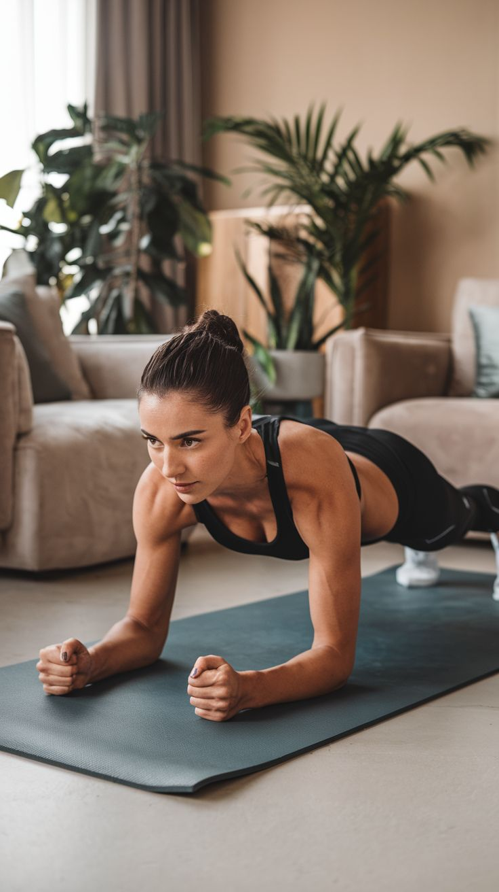

Consejos para iniciar

Consejos adicionales
- Calentamiento: Antes de empezar, haz unos minutos de marcha en el sitio o movimientos ligeros para preparar tu cuerpo.
- Enfriamiento: Termina con estiramientos suaves para los principales grupos musculares, especialmente las piernas.
- Escucha a tu cuerpo: No te fuerces. Si un ejercicio te resulta muy difícil, puedes modificarlo o descansar más tiempo.